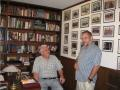
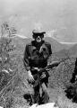
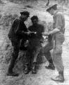
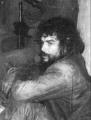
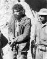
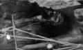

Che Guevaráról korábban már szerepelt itt, a Bombagyáron egy érdekes cikk
egy argentin történész, Alvaro Vargas Llosa tollából. Most Eduardo
Rózsa-Flores jóvoltából térünk vissza a témához, aki exkluzív interjút
készített Gary Prado Salmón bolíviai tábornokkal, aki annak idején
elfogta a vörös gazembert az õserdõben. A cikket Eduardo blogjáról emeltük át. A végén találhatóak az események helyszíneit bemutató térképek és Google Earth-mûholdképek.
Rózsa-Flores Eduardo: Che Guevara partizánháborúja: mítosz és valóság
Exkluzív
interjú Gary Prado Salmón tábornokkal, a bolíviai hadsereg
fõtisztjével, aki elfogta a Castro-kommunista partizánt az õserdõben
Bolívia köztársasági létének egyik legkritikusabb idõszakát éli meg.
Egy intézményesített, kvázi alkotmányos diktatúra szabja meg az ország
sorsát a növekvõ szociális és gazdasági válságban. A
kábítószer-kereskedelem, az egyre elviselhetetlenebb terhével, ami
bizonyíthatóan a hatalom csúcsáig ér, az összes politikai rétegeket
befedõ egyre borzasztóbb fekélyével az országot a teljes összeomlás
szélére sodorta. Természetesen nem segít megoldást találni erre a
tragikus helyzetre az sem, hogy a MÁS (a Mozgalom a Szocializmusért
nevû kormányzó párt) egyre szorosabb kapcsolatot épít ki a venezuelai
neokommunista vezetõ réteggel és a Kubát elnyomó kommunista
Castro-diktatúra kormányával.

Gary Prado Salmón és a szerzõ
2009. január 25-én népszavazáson döntenek annak az alkotmánytervezetnek
az elfogadásáról, melyet a kokatermesztõk érdekeit képviselõ és
indigenista (elméletileg az indiánok és meszticek jogaiért küzdõ) Evo
Morales pártja nyújtott be. A tervezet nem más, mint a kelet-európai
szocialista tábor már elvetélt kommunista "alkotmányainak" helyi kreol
másolata, illetve más marxista-leninista jellegû diktatúráké, jó adag
"bennszülött rasszizmussal" fûszerezve (lásd a korábbi zimbabwei es
rodéziai tragédiát).
Egy sor tekintélyes nemzetközi intézmény szerint egy bolíviai polgárháború veszélye több mint reális, fenyegetõ lehetõség.
A
Dél-Amerika szívében elhelyezkedõ országban, történelmi események
elõestéjén, e keretek között beszélgettünk a 20. század nemzetközileg
talán legismertebb bolíviai katonájával. A karizmatikus személyiség,
akit szeretnek és tisztelnek hazájában, történelmi szerepet játszott,
amikor harcban legyõzte a kommunista Che Guevara szabadcsapatát.
Rózsa-Flores Eduardo (RFE): Gary Prado Salmón tábornok úr, kérem, mutatkozzon be néhány szóban...

Gary Prado tábornok fiatalon – Che-re vadászva
Gary Prado Salmón (GPS) tábornok:
A bolíviai hadsereg hivatásos tisztje vagyok, illetve voltam. 1958-ban
végeztem a katonai akadémián lovassági alhadnagyként. Több egységben
szolgáltam a hadseregben, több évet töltöttem el kiképzõként katonai
intézetekben: a katonai õrmesterképzõben és a katonai akadémián (mint
hadnagy és százados, majd mint õrnagy) a kadétok testületének
parancsnoka voltam. Tanítottam számos katonai intézetben. Szakirányú
tanulmányaimat a Cochabamba-i összfegyvernemi iskolában végeztem, majd
Brazíliában, a katonai akadémián három évig. Vezérkari diplomát
szereztem, és ezután a Nemzetvédelmi Tanulmányok Akadémiáján kaptam
diplomát La Pazban. Harminc év katonai szolgálat után a törvényi
elõírásoknak megfelelõen korosztályommal együtt nyugállományba
vonultam, s azóta a politika és az oktatás területén dolgozom. Tanítok
a Nemzetvédelmi Tanulmányok Akadémiáján és más bolíviai egyetemeken és
felsõoktatási intézményekben. Ez röviden a szakmai pályafutásom.
[Hadosztályi
szinten több katonai alakulat parancsnoka volt, miniszter David Padilla
tábornok kormányában. 1985-ben altábornagyi rangban nyugalomba vonult.
Ezután különbözõ szintû politikai funkciókat látott el, Bolívia
nagykövete volt az Egyesült Királyságban és Mexikóban. – RFE]
RFE: Tábornok
úr, Önt úgy ismerik a világon, mint a bolíviai hadsereg azon tisztjét,
aki elfogta Ernesto Guevarát, alias Che-t 1967. október 7-én. Elmondaná,
hogyan készültek a hadmûveletre, amely végül a Castro-kommunista
gerilla elfogását eredményezte?
GPS tábornok:
Gyakorlatilag már 1967 szeptemberének végén többé-kevésbé ismert volt
elõttünk a megmaradt gerillacsapat tartózkodási helye. Nem szabad
elfelejteni, hogy Che gerillacsapata hónapokkal korábban két csoportra
oszlott. Minden katonai stratégia nélkül váltak ketté, és soha többé
nem találkoztak, mert elvesztették egymást. Akkor Joaquín és Che
csapata is céltalanul bolyongott az õserdõben anélkül, hogy
összeköttetésben maradtak volna. Elõzetesen nem jelöltek ki találkozási
pontokat. Ez alapvetõ taktikai hiba volt. A lényeg, hogy ez a két
csoport nem találkozott többé.
Augusztus végén Joaquín
csoportját Mario Vargas Salinas százados egy sikeres hadmûvelettel
csapdába csalta és megsemmisítette Palo de Diezben. Akkor szeptemberre
mi már a machengói zászlóaljjal, amely különleges antigerilla-kiképzést
kapott, Vallegrande felé tartottunk, mert Che Guevara maradék csoportja
ebbe az irányba mozgott. A helyi földmûvesektõl kaptuk folyamatosan az
információkat a szabadcsapatok mozgásáról. A nehézséget nem a
legyõzésük, hanem a megtalálásuk jelentette.
A magyar olvasók
számára talán könnyebb megérteni, ha mûveleti területnek nevezem ezt a
terepet. A mûveleti terület 40 ezer négyzetkilométer kiterjedésû volt,
akkora, mint Svájc. Egy erdõvel borított és utak nélküli Svájcé. A
feladat az volt, hogy megtaláljunk ötven embert ezen az erdõs területen.

Azonosítás és iratellenõrzés az õserdõben
(Gary Prado S. százados áll a kép jobboldalán, közepén "Camba", az egyik bolíviai gerilla, fogságban )
RFE: Tût kerestek a szénakazalban.
GPS tábornok:
Igen, mert folyamatosan menekültek elõlünk. Nem volt állandó bázisuk,
nem volt utánpótlásuk, nem volt összeköttetésük, semmijük, tehát nehéz
volt megtalálni õket. Amikor elindultak Vallegrande tartományba, miután
az idõ legnagyobb részét Cordillera tartományban töltötték, a Rio
Grandétól délre, fokozatosan bekerítettük õket. Szeptember 25-én a
vezetésem alatt álló machengói ezred egy százada, a B század végezte el
a mûveletet, amely velem együtt végigcsinálta a Ranger-kiképzést.
Katonáimat olyan újoncok alkották, akiket az utcáról adtak át nekem, és
akik négy hónapos kiképzésen estek át, és utána közvetlenül kivették
részüket a hadmûveletekbõl. 165 ember volt akkor a században. Beléptünk
Vallegrandéba, és innen Pucará felé átfésültük az egész területet.
Szerencsénkre
a mûveletek elsõ napján, szeptember 26-án volt egy kisebb összecsapás a
gerillacsapat elõõrse és a Galindo hadnagy vezette csoport között.
Galindo a szabadcsapat elõõrsét, amely három gerillából állt,
megfutamította. Coco Peredo köztük volt, de mivel Galindo csapatának
nem volt elég ereje, ebben a pozícióban maradt, és a szabadcsapat
visszavonult.
Ezt megtudva hatoltam be századommal azon a
délutánon, pontosabban estén, és így tudtuk elfogni az elõzõ délután
elmenekült gerillák közül a két bolíviait, Leónt és Cambát.
Kihallgattuk õket. Ezután elküldtük mindkettõjüket Vallegrandéba, hogy
a hatóságok döntsenek a sorsuk felõl. Akkor folyt Camiriben Regis
Debray tárgyalása. Így ezt a két embert azonnal elvitték oda, hogy
tanúskodjanak. Mi õrjáratozni kezdtünk. A járõrbázisomat az akkori
gyakorlatnak megfelelõen rendeztem be Abra del Pichachóban, egy kis
faluban, ahonnan kiindulva járõröztünk. Naponta három-négy
felderítõcsapat ment, harminc ember különbözõ irányból, és volt egy
tartalék szakasz, ami mindig a bázison maradt. A gerillák keresésével
egész napokat töltöttünk el, föl-le kutatva a hegyeken, a folyókon,
különös tekintettel a Rio Grande partvidékére.
Október 7-én
reggel kaptam egy hívást az egyik járõrtõl, azaz annak egyik tartalék
állásáról, amit az ezredem egy másik százada, Orlando kapitány
szakasza, az A század állított fel. A hívásra elindult egy szakasz a La
Higuera településre, ami az én bázisomtól három kilométerre feküdt. Az
ott lévõk kevesen voltak, mert csak az volt a feladatuk, hogy
ellenõrizzék a terepet, és elzárják a gerillák elõl a településre való
bejutást. A század többi része Pucarában maradt, 15 kilométerrel
északabbra.
Pérez alhadnagy hajnalban hívott engem, hogy
beszéljünk, ahogy mindennap szoktunk. Azt mondta, hogy éppen most
kapott hitelesnek tûnõ információt egy földmûvestõl. Elmesélte neki,
hogy elõzõ este lement egy szurdokba, hogy meglocsolja a
krumpliföldjét. Minden parasztnak egy meghatározott idõben kell
öntözni, kevés a víz ezen a környéken. Tehát õ volt a soros éjfélkor,
és ekkor látott egy csapat felfegyverzett férfit a szurdokban. Meg volt
rémülve, csendben maradt, nem mert zajt csapni. Megvárta, míg
elhaladnak. Csak hajnalban jött ki, és egészen a katonai állomáshelyig
futott, hogy elmondja, mit látott.
Akkor Pérez mondta nekem, az
információ tényleg biztosnak tûnik. "De nagyon kevés emberem van" –
tette hozzá. Azt mondtam neki, hogy várjon egy keveset. Visszarendeltem
az egyik felderítõcsoportomat, akik még közel voltak a bázishoz (a
másik három már eltávolodott), és így azzal a bázison lévõ tartalék
csapattal, amely hatvan emberbõl állt, s kiegészülve Pérez húsz
emberével, elindultunk a helyszínre. Ez már tekintélyes kis erõt
jelentett, és nekivágtunk megkeresni azokat az embereket.
Megérkezvén
a területre láttam, hogy két szurdok van, amelyek lejjebb eggyé
válnak. Nem voltunk biztosak, hogy melyik szurdokban rejtõztek el.
Elrendeltem, hogy fésüljék át a szurdokot felülrõl lefelé, és én
elfoglaltam egy záróállást. Blokádot hoztam létre a két szurdok
találkozásánál. Volt egy könnyû géppuskánk és egy 60 mm-es aknavetõnk,
de csak három vagy négy gránátunk hozzá. Pérez
õrjáratát, amely a Churo szurdokba próbált behatolni, azonnal
megtámadták, és két katona meghalt. Máris tudtuk, hogy ott van az
ellenség. A másik õrjárat nem talált semmit a szurokban, és várnunk
kellett 20-30 percet, amíg az átfésülés befejezõdött. Ekkor úgy
döntöttem, mivel a másik õrjáratot megállították a felsõ részen, hogy
lentrõl felfelé haladjunk, és találkozzunk szembe az ellenséggel. Több
órán keresztül követték egymást a kisebb-nagyobb összecsapások. Én a
helyemen voltam a hegygerincek találkozásánál, és egy pár katonát 15
méterrel feljebb rendeltem, hogy biztosítsák a vezetési pontot. Éppen a
szurdok irányába néztem, és láttam két gerillát kijönni egy kürtszerû
képzõdménybõl, akik egy árok után tûntek fel. Nehézkesen kapaszkodtak
fölfelé, katonáim hagyták, hogy felérjenek, és amikor felértek, az
orruk alá tolták a puska csövét, és azt mondták, hogy ne mozduljanak.
Akkor azt kiáltották: kapitány úr, megvan, kettõt elfogtunk!

Che megalázottan – fogságban
Azonnal odamentem, és azt parancsoltam nekik, hogy vegyék el tõlük a
felszerelést, a fegyvert, mindenüket, amijük volt. Mondtam, hogy
azonosítsák magukat, mire egyikük azt válaszolta:
"Én vagyok Che
Guevara." Ránéztem… ha Ön látta a fotókat...
RFE: Láttam.
GPS tábornok: Azokat, amelyeken látszik, hogy... azokat, amelyeken az elfogott Che alakjának nincs köze ahhoz...
RFE: Nincs köze a baloldalon idealizált Che Guevara képéhez...
GPS tábornok:
Az a kép, amely õt ábrázolja, nem megtévesztõ? Azt mondtam, jól van.
De volt néhány fizikai ismertetõjegy, amit ellenõriznünk és azonosítani
kellett. Az egyik jegy egy sebhely volt a jobb kézfején, a fülcimpája
kissé elálló volt, és kidomborodott az arccsontja, ezenkívül volt
néhány másolatunk azokról a képekrõl, amelyeket Ciro Bustos készített.
[Argentin újságíró, akit Regis Debray-jel együtt tartóztattak le. – RFE]
Ránéztem, és minden jegy megegyezett azzal, amivel kellett. Azt
mondtam, jó, majd a másik felé fordultam:
"És Ön?" Azt mondta:
"Willy
vagyok." "Akkor maga bolíviai" – mondtam neki. Megvolt a csatarendjük
[a gerilláké].
"Ön bolíviai, Simón Cuba." "Igen, bányász szakszervezeti
vezetõ vagyok." "Remek. Vigyék õket a parancsnoki álláspontra."
Elvittük
és megkötöztük õket. Látva ezeket, mert ugye biztonsági intézkedéseket
kellett foganatosítani, azt mondta [Che Guevara]:
"Ne aggódjon,
kapitány úr. Ön követett minket... Önök a rangerek, ugye?" "Igen" –
válaszoltam.
"Gondoltam – mondja –, mert a minap láttuk õket elhaladni.
Akkor most megtaláltak minket." Végül azt mondta:
"Ne aggódjon, már
vége van." Így volt valóban. Csüggedtnek tûnt. Végezetül azt mondtam
neki:
"Talán az Ön számára vége, de sokan még harcolnak kint, és meg
kell tennünk a szükséges óvintézkedéseket." Otthagytam. Leereszkedtem a
szurdokba. Folytattuk a tisztogatást, és ahogy sötétedni kezdett,
felfüggesztettem a hadmûveletet, mert nagyon gyorsan sötétedett.
Hét
gerillát megöltünk, és volt két foglyunk. Elég volt erre a napra, nem?
Otthagytam egy kis csapatot, hogy védje a bejáratot, a többieket
visszavontam. Volt négy halottunk, négy sérült katonánk, hét halott
gerillánk és két foglyunk. Problémát okozott, hogyan hozzuk ki a
szurdokból és szállítsuk el õket. Kevés emberünk volt. Ekkor hívtam a
földmûveseket, akik az összecsapás alatt a szurdok tetején
csoportosultak.
RFE: A kíváncsiság...
GPS tábornok:
Kíváncsiskodva nézték mindezt.
"Jöjjenek" – mondtam –,
"segítsenek.”
Végül is segítettek nekünk. Vitték a sebesülteket és a halottakat.
Felmentünk La Higuerába, a legközelebbi településre. Ott volt egy
kicsinyke iskola, két teremmel. Azt parancsoltam, hogy vigyék az egyik
terembe a hullákat és Willyt, a másikba pedig helyezzék el Che Guevarát
egyedül. Elrendeltem, hogy egy a tisztjeim közül mindig legyen ott
mellette.
RFE: Attól tartott, hogy öngyilkos lesz?
GPS tábornok:
Persze. Mert délután, amikor a lövöldözés kellõs közepén voltunk még,
egyszer csak azt mondta nekem:
"Ihatok vizet? Még van víz a
kulacsomban." A kulacsa, amit elvettünk tõle, a dolgai között volt az
egyik oldalon. Azt mondtam:
"Tessék!" Hogy ne legyen öngyilkos, az
enyémbõl adtam neki, és azt mondtam:
"Igyon vizet, de ebbõl." Ezután
azt mondta:
"Van cigarettám is ott, rágyújthatok?" Az én cigarettáimból
kínáltam meg. Erre azt mondja:
"Nem, nem... fekete dohányt szívok." Én
Pacificot szívtam. (Ez világos dohányból készül.) Így megkérdeztem
katonáimat, hogy kinek van mondjuk Astoriája. Egyikük, akinek volt,
felajánlotta, mondván, itt van, adjon neki fekete dohányt.
RFE: Nem használhatott semmit a sajátjából, ugye?
GPS tábornok:
Mindig elõvigyázatosnak kell lenni. Este, induláskor megérkezett a
parancsnokom, Ayoroa õrnagy Pucarából. A helikopter is megjött, amit
kértem, hogy elszállítsuk a sebesülteket, de nem tudott leszállni a
hadmûveleti területen, mert ott nem voltak meg a megfelelõ biztonsági
körülmények. Tehát La Higuerában szállt le. Onnan elvitték az elsõ
halottakat és a sebesülteket. Párszor fordult a helikopter, és ezzel
vége is lett a napnak, megállapodtunk, hogy másnap kora reggel
visszatér. Így egész éjjel ott voltunk vele La Higuerában. Én feleltem
Che Guevaráért.

Che megkopottan – megbilincselve
RFE: Mikor tett jelentést Ön a fõparancsnokságnak?
GPS tábornok: Délután fél kettõkor, vagy kettõkor körülbelül.
RFE: Ekkor még a szurdokban volt, ugye?
GPS tábornok: Igen, a szurdokban voltunk.
RFE: A szurdokban...
GPS tábornok:
Ott voltunk, és onnan is kértem egy helikoptert. Jeleztem, hogy éppen
összecsapás folyik. Vasárnap volt, és elég nehéz bárkit is találni
ilyenkor, nem? Féltem, hogy nem lesz ember, aki továbbítja a
jelentésemet. Ekkor nem rendelkeztem közvetlen összeköttetéssel a
hadosztály-parancsnoksággal. A rádióm egy PRC 10-es volt. Nem volt nagy
hatótávolsága, így hát csak a pichachói bázisommal léptem kapcsolatba,
ami onnan körülbelül 4-5 kilométerre esett. Volt egy tisztem a bázison.
Neki küldtem az üzeneteket, és õ továbbította. Ott volt egy másik
rádiónk, egy GRC 9-es, és ezzel tudtuk felvenni a kapcsolatot
Vallegrandéval.
RFE: Tehát azt mondta nekik, hogy volt egy összecsapás, amiben...
GPS tábornok: Van egy másik foglyom is.
RFE: Azonosította a foglyot?
GPS tábornok: Igen, azonosítottam.
RFE:
Részletezné az akkori közállapotot? Azokra a körülményekre gondolok,
amiket fontosnak tart, illetve amik Guevara halálához vezettek.
GPS tábornok: Igen, lehetõségem volt...
RFE: Tudja, számos változat van...
GPS tábornok:
Igen. Lehetõségem volt beszélgetni errõl az ügyrõl az egyik
személyiséggel, aki részt vett a döntéshozatalban. Alfredo Ovando
Candía tábornokról van szó. Õ volt a fõparancsnok akkoriban. Tíz évvel
az események után találkoztunk Madridban. Akkor már visszavonult, és
ott lakott. Én meg pont ott voltam katonai attasé. Így hát
meglátogattam; nagyra becsültem, nagyon tiszteltem mindig is.
Beszélgetni kezdtünk. Arra gondoltam, hogy megírom az egészet, mint
ahogy errõl a témáról már írtam egy könyvet, és elég sikeres volt. Azt
kérdeztem tõle:
"Miért hozta meg ezt a döntést, mi történt, tábornokom,
rajta, magyarázza meg!" Erre azt mondta:
"Azon az estén tanácskoztunk,
október 7-én, »Renecóval«." Renecón õ Barrientost értette, Rene
Barrientos Ortuño elnököt, aki akkor ott volt Juan Jotával, azaz Juan
José Torres Gonzalesszel; õ a vezérkari fõnök volt. És ott tartózkodott
Ovando vezérkari fõnökségének parancsnoka is.
"Összeültünk" –
folytatta a tábornok –,
"és elemezni kezdtük a helyzetet, és akkor
láttuk, hogy az a logikus, ha hadbíróság elé állítjuk, ahogyan a
többiekkel is tették. A problémánk csak az volt, hogy nincsen
halálbüntetés Bolíviában, így a legnagyobb büntetés maximum harminc év
börtön. Ezért azon kezdtünk gondolkodni, hogy hova fogjuk tenni õt
harminc évig?" Tudniillik Bolíviában nem voltak biztonságosnak
nevezhetõ börtönök. Csak azóta épült ki egy kis biztonságos börtön, a
chonchocorói, de ez sem nevezhetõ magas biztonsági fokozatúnak.
"Akkor
harminc évre eltenni, de hova?" – kérdezte Ovando.
"Állandóan ki legyünk
téve mindenféle nyomásnak, látogatásoknak és tüntetéseknek... mit tudom
én. Mindig nyugtalanság lett volna."
Meghozták hát a döntést, és
elrendelték az azonnali kivégzését. Madridban szóvá tettem Ovando
tábornoknak, és õ egyetértett velem abban, hogy rosszul hoztuk
nyilvánosságra a dolgot. Sok hiba történt, és végül ezek is
hozzájárultak a körülötte lévõ mítosz megteremtéséhez.
Che Guevara halála
1967. október 8.
"Délelõtt
11 óra körül, rádión kaptuk az utasításokat. Mindenféle további
magyarázat nélkül a parancs a foglyok azonnali kivégzésérõl
rendelkezett. […]
Rejtjelezve érkezett a parancs Vallegrandéba a
kivégzésrõl, de nem tartalmazta annak módját, és azt sem, hogy az
esemény hírét hogyan és miként publikáljuk. Éreztük, hogy ez rengeteg
problémát fog okozni az elkövetkezendõ napokban. Zenteno ezredest
bízták meg a feladat végrehajtásával. Az altisztek közül kért két
önkéntest. Jelentkezett Mario Terán altiszt és Bernardino Huanca
õrmester. Miután meghallgatták a hadosztályparancsnok utasításait,
egyszerre léptek be a két tanterembe, ahol külön-külön volt elhelyezve
Che és Willy. Szó nélkül egy-egy sorozatot eresztettek a foglyokba.”
- Idézet Gary Prado Salmón tábornok A feláldozott partizáncsapat c.
könyvébõl.
[Mario Terán Guevarával, Bernardino Huanca pedig Willyvel végzett. – RFE]
RFE: Tehát a katonai vezetés hibái, az egész ügy hibás kezelése hozzásegített a mítosz felélesztéséhez...
GPS tábornok:
Persze. Mert az a helyzet, hogy a fegyveres erõk kiadtak egy hivatalos
közleményt, miszerint volt egy ütközet, ahol ezek és ezek a katonák
meghaltak, ezek és ezek az események történtek, ezekkel és ezekkel a
gerillákkal és pont. Tehát Che Guevara harcban halt meg. Ez volt az
elképzelés. De nem kérdezték meg tõlünk, nem kérdezték meg tõlem,
mondhatjuk-e, hogy meghalt az ütközetben. Mert akkor azt mondtam volna
nekik, hogy nem. Mert az emberek látták. És egy országban, ahol nem
volt cenzúra, természetesen nem korlátozták a sajtószabadságot. Az
újságírók tömegesen érkeztek Vallegrandéba, mert látták, hogy hamarosan
vége lesz a harcoknak, hogy vége a gerilláknak. A legbátrabbak elmentek
egészen Pucaráig, mert csak odáig ért az út, onnan már csak gyalog
lehetett továbbmenni. De ott beszélni kezdtek az emberekkel, és köztük
voltak azok a földmûvesek is, akik a csapattal együtt voltak, és akik
segítettek nekünk.
RFE: Akik információkkal, teherszállítással segítettek Önöknek...
GPS tábornok:
S ekkor mondják az újságírók:
"Che meghalt." "De még itt sétált" –
mondták erre a parasztok –,
"még láttuk õt itt menni." Ekkor bukkant fel
az elsõ kétely. Hogyan halhatott meg csatában, ha itt néhányan azt
mondják, hogy látták õt életben? Ezt a fõparancsnokság megpróbálta
helyrehozni egy második kommünikével, melyben azt állították, hogy
"az
ütközetben szerzett sérülések következtében halt meg".
Így
maradt a dolog, ámde két nappal késõbb a hadsereg utasítására
nyilvánosságra hozzák a boncolás eredményét, a halottkémi
bizonyítványt, amelyben az áll, hogy kilenc lövés volt a mellkasában.
Hát senki nem járkál csak úgy kilenc lövéssel a mellkasában... Ki is
robbant a balhé. Végül is mindezek után Barrientos elnök kijelentette
nyilvánosan:
"Én rendeltem el a kivégzését, én vagyok az egyedüli
felelõse ennek az ügynek."
RFE: Tegyük hozzá, hogy mindez jogában is állt, ugye?
GPS tábornok:
Igen. Abban az idõben nem beszélhettünk emberi jogokról, úgy, ahogy
manapság. Abban az idõben õk is Kubában sokakat agyonlõttek tárgyalás
nélkül. Ez volt az általános gyakorlat. A gerilláknak nálunk nem voltak
jogaik.
RFE: Nem akarok
elõreszaladni, mert érintjük majd a témát, de van még egy nagyon fontos
elem ebben a történetben. Ne feledjük, hogy Che külföldi volt...
GPS tábornok: Ez egy fegyveres invázió volt!
RFE: Így van.
GPS tábornok: Fegyveres invázió az ország területén.
RFE: Ön tudta akkor, amikor megkapta a hadiparancsot, hogy kikkel állnak szemben?
GPS tábornok:
Igen, igen. Áprilistól kezdve, amikor elkapták Regis Debrayt és más
dezertõröket, a hadsereg biztos volt abban, hogy Che Guevara ott van.
De a hír nem kapott nyilvánosságot, pont azért, hogy elkerüljük a
találgatásokat, a nagyobb zûrzavart. Továbbá elõvigyázatosságból is,
hiszen akkor azt beszélték, hogy hasonmása is lehet. Ahogyan Szaddám
Huszeinnek is voltak hasonmásai, Churchillnek is, Hitlernek is. Ezekrõl
mind azt mondják, hogy hasonmásaik voltak. Úgy döntöttünk, hogy nem
válunk nevetségessé azzal, hogy azt mondjuk, itt van Che, és utána
kiderül, hogy ez csak egy hasonmás.
Így a hadvezetés sohasem
mondta, egészen Che Guevara halálának napjáig, hogy Che Bolíviában van.
Debray ügyvédje hozta nyilvánosságra a hírt. Azt mondta, hogy „a
védencem idejött, mint újságíró, egy interjúra” [Che-vel]. Addig jól
védték Debrayt, de aztán közvetlenül Che elfogása után elküldtük a nála
talált naplót. És abban azokról az instrukciókról beszél, amiket õ
adott Debray-nek. Arról, hogy hogyan akart Debray elmenni, mert sokkal
több haszna volt kint, mint ha marad a gerillákkal, tehát Che
naplójából világosan kiderült, hogy Debray tagja volt a szervezetnek.
Nem újságíró volt, aki interjúra jött. Így ezért lett elítélve, még ha
késõbb el is engedték.
[A francia kormány nyomására engedték el, nem
kellett a büntetését letöltenie. – RFE]
Ilyen volt a hangulat,
de nem szabad elfelejteni, hogy Bolívia alkotmányos berendezkedésû
demokrácia. Barrientos tábornok, aki korábban Victor Paz Estenssoro
doktor idején alelnök volt, megnyerte a választásokat. Ismert politikus
volt, és emellett igen népszerû. Különösen a parasztság körében...
RFE: Nagyon szerette õt a lakosság, kivált a földmûvesek.
GPS tábornok:
Csodálták õt. Mûködött a kongresszus, még a kommunista pártnak is
voltak parlamenti képviselõi. Sajtószabadság volt, az egész országban
normális volt az élet. És ebben a környezetben következett be egy
külföldi behatolás, amelyet a lakosság elutasított. A nemzet többsége
támogatta a kormányt és a fegyveres erõket.
RFE: Amikor megtudta, hogy Che Guevara áll a partizánok élén, mi volt a reakciója. Mit gondolt Ön Guevara személyérõl?
GPS tábornok:
Akkoriban még nem volt olyan ismert. Akkor még nem volt olyan, mint
amilyennek késõbb felépítették, nem igaz? Tudtam, hogy harcolt a Sierra
Maestránál, és hogy Kubában magas tisztségeket töltött be, de a róla
szóló információk alapján nem volt benne semmi különleges. Egyszerûen
egy gerillaharcos volt.
[Ernesto Guevara több miniszteri posztot
töltött be, a Kubai Nemzeti Bank elnöke volt, de ami igazán ismertté,
de még inkább hírhedtté tette elõször a kubai lakosság körében, és
amirõl szívesen hallgat a baloldali-liberális média, az az, hogy az
1959. január 1-jei kubai forradalmi hatalom átvétele után több száz
embert végeztek ki mindenféle bírósági ítélet nélkül, az õ közvetlen
parancsára. Nem egy esetben õ adta meg a kegyelemlövést a
kivégzetteknek. Lassan azért kezdenek terjedni hitelt érdemlõ
információk arról is, hogy a Fidel Castro által vezetett Sierra
Maestra-i hadjárat alatt is Che Guevara több esetben brutalitásról és
kegyetlenségrõl tett tanúbizonyságot, saját elvtársaival szemben is. –
RFE]
RFE: Tábornok úr,
katonaként mi a szakvéleménye a Che-féle gerillamozgalomról, a kubai
beavatkozásról, és az ország akkori helyzetérõl?
GPS tábornok:
Mint már mondtam, az országban alkotmányos rend volt. Normális élet
folyt, mikor is hirtelen megtörténik a kubai beavatkozás, amit a
lakosság többségében elutasított. No mármost, értékelni kell katonai
szempontból a gerillaharcokat, a katonai mûveleteiket, amelyeknek sok
hibájuk volt, érti?
RFE:
Elmondaná a véleményét? Adna egy rövid szakértõi elemzést a
gerillaharcról, hogy hogyan alkalmazzák az általános érvényû elveket?
Beszélne Guevara vezetõi képességeirõl? Aztán itt van Che Guevara híres
könyvecskéje is, A gerillaháború, amit elvileg használni is lehet, nem?
De ha valaki összeveti a konkrét esettel, a bolíviai gerillák
harcmodorával, mûködésével, akkor hatalmas ellentmondásokat talál.
GPS tábornok:
A könyv, amit publikáltam (A feláldozott partizáncsapat -
La Guerrilla
Inmolada), és amit még Fidel Castro is megdicsért egyszer egy
interjúban, objektív, világos, és pártatlan. Ebben a könyvben elemezzük
a taktikát, a mûveleteket, tehát ez egy használható könyvecske. Guevara
a mûvében (
A gerillaháború) leírt néhány dolgot, de a szerzõ épp az
ellenkezõjét tette itt Bolíviában. Ezt a saját könyvemben példákkal
bizonyítom be.
Egyik ilyen példa, hogy a gerillacsapat
kettészakad a vezetés alapvetõ hibájából, és nincs lehetõség az
egyesülésre. Hallja, ha ön elmegy a barátjával egy futballmérkõzésre,
és sok ember van, nyilván azt mondja a társának, figyelj, ha
elszakadnánk, akkor találkozzunk abban a kávézóban. Ennek a
gerillacsapatnak az esetében a tagok elszakadnak egymástól, és többé
nem találkoznak. Ez egy szörnyû vezetõi hiba! Továbbá Che arról ír,
hogy állandó jelleggel kell zavarni, zaklatni az ellenséget. Ehhez
képest õ folyamatosan menekült. Tehát a katonai vezetés nagyon gyenge
volt. Világos, hogy sokat nyomott a latban, hogy elvesztették a
fõhadiszállásukat. A hadsereg elfoglalta azt, így a gerillák
vándorlásra ítéltettek, nomádokká váltak, mindenféle kommunikáció
nélkül elvesztették a kapcsolatot a külvilággal. Így nem kaphattak
erõsítést, sem információkat, semmit, teljesen elszigetelõdtek.
RFE: Mi a véleménye ma? Változott-e a nézete valamiben az 1967-eshez képest a gerillák világáról és Che Guevara alakjáról?
GPS tábornok:
Hm. Azon az éjszakán megvitattam ezt a kérdést Che Guevarával. Azt
mondtam neki: "
Minek jött Bolíviába? Nem értem. Bolívia néhány éve
forradalmi változáson ment át, amely megváltoztatta az országot." "Igen, tudom" – mondta. –
"Itt voltam 1953-ban, a forradalom után." "Akkor magának tudnia kell, hogy agrárreformot hajtottunk végre! Hogy
államosítottuk a bányákat! Hogy az ország szociálisan fejlõdik! Akkor
mi a fenének jött ide?" Azt mondta:
"Nem csak az enyém volt a döntés." "Hanem kié?" – kérdeztem. –
"Fidelé?" "Más szintekrõl van szó." Nem
akarta jobban kifejteni, de más szinteken hozták ezt a döntést.
Ahogy
telt az idõ, tovább kutakodtam, megnézve mindent, ami ebben a témában
létezik. Benigno könyvei, aki az egyik túlélõje ennek a korszaknak,
világosan mutatják, hogy Kuba meg akart szabadulni tõle… Amikor Che
Kongóban volt, írt egy búcsúlevelet, amit késõbb nyilvánosságra hoztak.
Ebben lemondott a kubai állampolgárságáról és a parancsnoki rangjáról,
mindenrõl... Ahogyan mondja Benigno, mindez azért történt, hogy ne
legyen probléma abból, ha elkapják, vagy meghal, és azonosítják, hogy
Kubát ne terhelje felelõsség mindazért, amit Che Kongóban tett. Mindezt
akkor tették közzé, amikor még élt és virult. Ezzel bezárták Kuba
kapuit elõtte, és nem tudott visszatérni.
Titokban mégis
visszament, miután három hónapig könyörgött Prágában a kubai
nagykövetségen. Ott bujkált. Megengedték neki, hogy visszatérjen,
azért, hogy idejöjjön Bolíviába. Úgy küldték ide, hogy
"jól van,
kedvesem, vidd ezt, megkapod azt, ezt neked adjuk, és mehetsz". Utána
magára hagyták, nem adtak neki semmilyen segítséget attól fogva, hogy
Bolíviába ér. Még Ivan is, aki az összekötõje volt Kubával, eltûnt.
RFE: Az elsõ percben visszavontak minden korábban megígért helybeni segítséget...Visszakoztak.
GPS tábornok: A kommunista párt nemet mondott neki. A gerillák szakítottak Monjéval.
[Mario
Monje a Bolíviai Kommunista Párt fõtitkára volt, aki közvetlenül kapta
az utasításokat Moszkvából. A BKP késõbbi kongresszusain ez többször
vita tárgya volt, sokan távoztak is a pártból Moszkva iránti túlzott
engedékenysége miatt. Che Guevara bukása után nemsokára Monje távozott a
párt élérõl, és a KGB védelme alatt bujkált évtizedeken keresztül
különbözõ moszkvai lakásokon. Azóta bebizonyosodott, hogy Monje a
Szovjetunió utasítására árulta el Guevarát, beleértve ebbe az
összeesküvésbe, a gerillamozgalomról szóló, életbe vágóan fontos
információk továbbítását a CIA-nak – az USA központi hírszerzési
hivatalának. Ismerve az események lefolyását, érthetõvé válik, hogyan
úszhatta meg a szovjetek irányította kommunista tábor a botrányt és az
ebbõl következõ szégyent az elárult gerillaügy miatt. Aleida March,
Guevara özvegye, közvetlenül Monje személyét teszi felelõssé férje
halála miatt. – RFE]
Csak a fiatal kommunisták egy része maradt a
gerillák mellett. Ezután még toboroztak néhányat, akik Moisés
Guevarával érkeztek. [A kommunista párt volt tagja, aki a gerillákhoz
csatlakozva már nyílt maoista nézeteket vall.] Pékek, ácsok jöttek,
akik eszmék, politikai és fizikai feltételek híján voltak.
RFE:
Abban az idõben, tábornok úr, Ön egyértelmûen védte, felsõbb parancsra,
természetesen, de nyilvánvalóan személyes meggyõzõdése miatt is, mint a
bolíviai hadsereg tisztje, a bolíviai köztársaság területi
integritását. Ön, mint bolíviai tiszt, nemcsak az államot védelmezte,
hanem a nemzetet a maga egészében is a nyílt
internacionalista-kommunista agressziótól. Mit gondol az ország
jelenlegi helyzetérõl?
GPS tábornok: Ez
az egyik aggodalmunk, nem igaz? Mert nyílt külföldi beavatkozással
álltunk szemben. Annyit kritizálták az egyik oldal állítólagos
beavatkozását, most viszont más országok nyilvánvaló beavatkozásának a
szenvedõ alanyai vagyunk. Mert a kubaiak és a venezuelaiak ezreinek
jelenléte az országban tagadhatatlan tény... Különbözõ területeken is
tevékenykednek, nem csak azokon, amelyekrõl hivatalosan is beszélnek,
mint az oktatás, egészségügy. Titkosszolgálati és néhány esetben
katonai feladatokat is végeznek. Egyszóval fájdalmas, hogy az ország
törvényes kormánya ilyen irányba indult el, és ez nagyon sokba fog
kerülni az országnak, s elszigeteltséget fog eredményezni.
Vitathatatlan tény, hogy Bolívia egyre magányosabb lesz a régióban.
RFE: Egy
kiegészítõ kérdést is feltennék, és habár az elõbbihez kapcsolódik,
csak szeretném pontosítani a dolgokat: akkor Bolívia belügyeibe való
külföldi beavatkozásról beszéltek. Tehát a kérdés: mi a véleménye és
hogyan értékeli a külföldi beavatkozást, mely napjainkban
tapasztalható? Azokra a külföldi, kubai és venezuelai titkosszolgálati
ügynökökre és katonákra utalok, akik az állam területén vannak és
dolgoznak...
GPS tábornok: Ebben
a pillanatban, és efelõl nem lehet kétség, van egyfajta nyílt
beavatkozás a kubai és venezuelai hírszerzõ és állambiztonsági szervek
részérõl, akik aktívan tevékenykednek Bolíviában. Ebben majdnem
bizonyosak vagyunk. Ami minket, a fegyveres erõk volt és jelenlegi
tagjait aggaszt, az a fegyveres erõk passzív hozzáállása. Nem fékezi
ezeket a folyamatokat. Nem figyelmezteti a kormányt, hogy súlyos hibát
követ el. Mert mennyire kritizálták a külföldi beavatkozást, de annak
számít a venezuelai és a kubai is, nem? Nem mondhatjuk, hogy a külföldi
beavatkozás csak egyetlen oldalról jön. Tehát a fegyveres erõk mostani
tétlensége aggaszt.
RFE:
Ön, mint a bolíviai hadsereg tábornoka, mit érez, és mit gondol a
jelenlegi végrehajtó hatalomról, amikor az már két éve hivatalosan,
minden tiszteletet megadva ünnepli Guevarát és társait, s megfeledkezik
azokról a bolíviai hõsökrõl, akik a külföldi beavatkozás és a helyi
kommunisták elleni harcban estek el?
GPS tábornok:
Igen, készítettünk egy beadványt. Én a veteránok szövetségének örökös
elnöke vagyok. Az elõzõ kormánynál elértük, hogy veteránjaink megkapják
a Nemzet Hadigondozottja státusát, ami természetesen a sorkatonákra
vonatkozik, és nem a hivatásos tisztekre. Mindezt abban a reményben,
hogy azok a katonák, akik részt vettek a kommunista beavatkozás elleni
hadjáratban, most, hogy már a 60. életévük körül járnak, kaphassanak
valamiféle szociális támogatást az államtól. A jelenlegi kormány alatt
természetesen bezárult minden kapu, leállt minden fentieket érintõ jogi
folyamat… Nyílt megaláztatás folyik. Ez minket arra indított, hogy
formális úton beadványokat juttassunk el hozzájuk. Ezeket a kormány nem
méltatta válaszra, és nem fûzött hozzá megjegyzéseket sem, de a
beadványok az utókor számára bizonyítékként szolgálnak arra, hogy mi is
elmondtuk a véleményünket nemzeti jelentõségû kérdésekben. Mint amilyen
a hazaszeretet hiánya, mert ma nem tesznek mást, mint hogy a
megszállókat ünneplik.
Nyilvánosan elmondtam az elnöknek, a
médiában, a televízióban, hogy már csak az hiányzik, hogy szobrot
emeljen Sotomayor ezredesnek. Kicsoda Sotomayor? Az ezredes, aki azokat
a chilei csapatokat irányította, akik megölték Eduardo Avaroát.
[Bolíviai nemzeti hõs, aki a chilei megszálló csapatok elleni
küzdelemben esett el az 1879-84 közötti ún. csendes-óceáni háborúban. –
RFE] Tehát hogy emeljenek szobrot neki, és adózzanak tisztelettel, ha
már tiszteletüket akarják kifejezni azoknak, akik legázolták az
országot. Van egyfajta rossz hangulat. De a legfelsõbb katonai vezetés
minden akció elõl elzárkózik. Mi, amikor betöltöttük a 40. évfordulót,
tavalyelõtt bemutattunk egy mûsortervet. Megemlékezést akartunk tartani
Camiriben, és egyet Vallegrandéban. De az utóbbit betiltották.
RFE: Megtiltották, hogy részt vegyenek mint...
GPS tábornok: Mint a veteránok, mint a Nemzet Hadigondozottjai...
RFE: Nyugállományúként…
GPS tábornok: Igen, így is megtiltották.
RFE: Van hozzá joguk?
GPS tábornok:
Elzártak elõlünk minden lehetõséget. Szükségünk volt támogatásra, nem?
Hogy legyen egy katonai díszegység, fúvós zenekar és effélék.
RFE: A hadsereg megtagadta a saját kötelességét?
GPS tábornok: A fegyveres erõk fõparancsnoksága. A hadsereg vezetése.
RFE: Mit érez belül? Egy ilyen helyzetben?
GPS tábornok:
Szörnyû haragot. Mindannyiunkban szörnyû harag volt. Mindenki a saját
kis posztocskáját védi.
[Mármint a fegyveres erõk legfelsõbb vezetése.
– RFE] Ez nagyon elszomorító.
RFE:
Most tegyük félre a gerillákat, Guevarát és a történelmet. Hogyan látja
Ön hazáját ma, több mint negyven évvel az események után?
GPS tábornok: Úgy
látom, hogy az országban két történelem létezik. Mindig is azt mondtam,
hogy sokkal fontosabb dolgokat tettem az életemben Che Guevara
elfogásánál. Ami a gerillacsapatok elleni részvételünket illeti, ez egy
rövid epizódja pályámnak és közéleti szereplésemnek. Az egyik
szekértolója voltam a demokrácia visszatérésének, ezért a társadalom
Santa Cruzban és az országban is tisztel, hiszen ismerik az életutamat.
Azon kezdtem gondolkodni, hogy valójában a demokrácia megadta-e azt az
elégedettséget, amit az egész bolíviai népnek meg kellett volna adnia.
Miért? A politikusok (és magamat is közéjük számítom, hiszen részt
vettem a politikában, miután abbahagytam az aktív szolgálatot) hibát
követtek el. Ezért mondom idõnként, hogy ez a demokrácia rossz
csillagzat alatt született. Mert ez a demokrácia, amelyet én, amelyet
mi akartunk, mikor Padilla tábornok kormányának tagjai voltunk 1978 és
1979 között, kiírta a választásokat, és olyan jól csináltuk, hogy
döntetlen lett az eredmény, senki nem nyert. Sem Paz Estenssoro, sem
Siles, a két jelölt. Ezt a helyzetet a kongresszusnak kellett
megoldania az alkotmány értelmében. És a kongresszus tehetetlenségbe
süllyedt négy nap alatt. A kongresszus szavazott, de nem tudta
eldönteni, hogy ki legyen az elnök kettejük közül.
Végül
találtak egy megoldást, politikai kompromisszum született, és
választottak egy ideiglenes elnököt, mely lehetõségnek fogalma sem
létezik az alkotmányban. Úgy ítélem meg, hogy mindig, amikor valamit
csinálni akarnak a politikusok, a politikai megegyezés útjára lépnek.
Legutóbb politikai megegyezés címén kiigazításokat hajtottak végre az
alkotmányon. Magyarul, politikai megegyezés címén megerõszakolták azt.
RFE: Tisztán megsértették az alkotmányt...
GPS tábornok: Vagy huszonötször. Van egy egész listám errõl.
RFE: Akkor ez egy
ex lex állapot?
GPS tábornok:
Törvényen kívüli, de politikai megegyezéssel próbálták menteni a
helyzetet. Tehát hozzászoktunk az alkotmány megsértéséhez, és ez nagy
sebeket ütött a demokrácián. Ezért van az, hogy a jelenlegi elnök
arcátlanul megengedheti magának, hogy így beszéljen: „Azt mondják, hogy
törvénytelen, én akkor is megteszem. Azért vannak az ügyvédek, hogy ezt
késõbb helyre tegyék.” Hát, ilyen a mi alkotmányunk, ilyen a mi
demokráciánk. És ez nem fog megoldódni, amíg nem tanuljuk meg, hogy
mindannyiunknak a törvényhez kell tartanunk magunkat, tisztelni azt.
RFE: Elõfordulhat, hogy egy olyan kormány, mint a mostani Bolíviában, megtanulja tisztelni a törvényt?
GPS tábornok:
Nem, mert ez a kormány nem képes ilyesmire. Ennek a kormánynak az
alkotmány és a törvények akadályt jelentenek, és ezt nyilvánosan
mondták is, úgyhogy számukra a demokrácia csupán egy álarc. Ez a
kormány nem demokratikus, nem érdeke a demokrácia, hanem más úton jár.
RFE: Tábornok úr, van még valami, amirõl elfeledkeztem, amit kihagytam?
GPS tábornok:
Van valami, ami felkeltette az érdeklõdésemet, mikor interjúkat
készítettek velem, s fõleg a fiatal újságírók jöttek és kérdezték: mit
érzett, amikor szemtõl szemben állt Che Guevarával? Azt mondtam nekik:
"Sajnálatot." Mert ha valaki látta a közkézen forgó fotókat róla,
tényleg sajnálatra méltó volt, amilyen állapotba került. Tehát sok a
dísz és a kitaláció a személye körül...
RFE: Nem inkább arról van szó, hogy már azzal a benyomással jönnek Önhöz…
GPS tábornok: A mítosz...
RFE: A mítosz eredményével. Nyilvánvalóan nem nézik a körülményeket.
GPS tábornok: És ezt a mítoszt azért teremtették, hogy kompenzálják a castro-kommunizmus politikai és katonai vereségét Bolíviában.
RFE: Megbukott ez a külföldrõl jövõ modell...
GPS tábornok:
Mert ettõl kezdve a vidéki gerillaharcok véget értek. Megbukott a
minta, többé már nem volt jó semmire. A Guevara-féle gerillamodellt
többé nem alkalmazták, mert vereséget szenvedett. A bolíviai hadsereg
bebizonyította, hogy a módszer [a Guevara-féle] használhatatlan akkor,
amikor egy nemzet hisz a demokráciában, értékei vannak, bízik a
hazájában. Ez az, amit újjá kell élesztenünk Bolívia érdekében.
RFE: Köszönöm a beszélgetést!

Ernesto Guevara – azaz Che, a hõs, a késõbbi mítosz – holtan
(Megjelent a Kapu magazin 2009/1. számában)